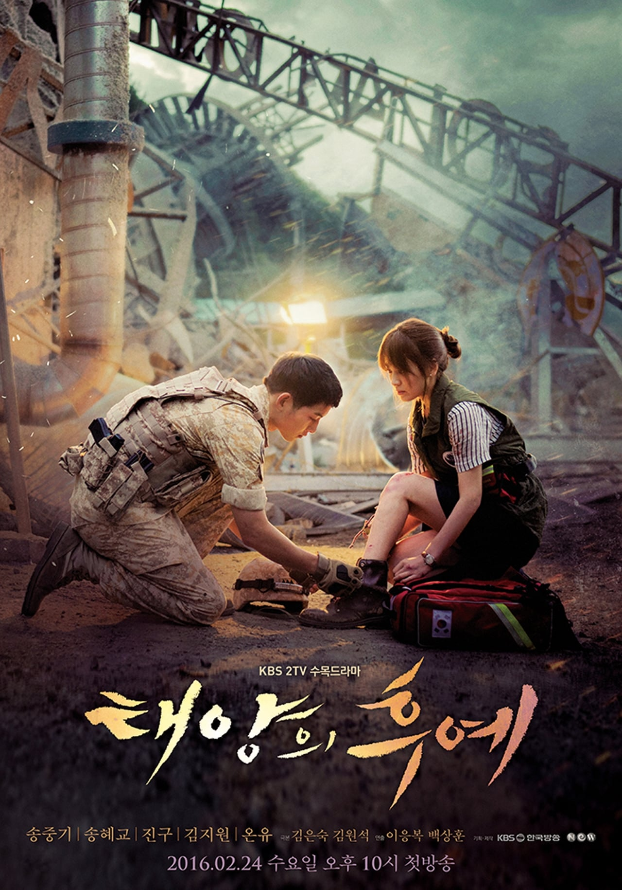

"K-DRAMAS"
| Inicio | Descendientes del sol | Propuesta Laboral | Mi Nombre | Alquimias De Almas |
|---|
Mis favoritas
Cuando se trata de olvidar todo lo malo que te sucede en tu vida, ver un K-Drama es que te olvides de tu realidad y sientas que solo eres tu y esa serie que te trasmite paz al verlo.
Descendientes Del Sol |
Propuesta Laboral |
Mi Nombre |
Alquimias De Almas |
 |
|||
Tras encontrarse por casualidad en un hospital,
un soldado se enamora de una cirujana con talento. Sus mundos son opuestos, pero el
destino tiene sus propios planes. |
Una mujer se hace pasar por su amiga en una cita a ciegas para alejar al pretendiente. Pero el plan se complica cuando él resulta ser su jefe y le hace una propuesta. | Tras el asesinato de su padre, una mujer con sed de venganza se pone a las órdenes de un poderoso jefe criminal y se une al cuerpo de policía. | Una poderosa hechicera atrapada en el cuerpo de una mujer ciega se encuentra con un integrante de una prestigiosa familia, que necesita su ayuda para cambiar su destino. |
Derechos reservados
Mayra Lizeth Mercado Pastrana